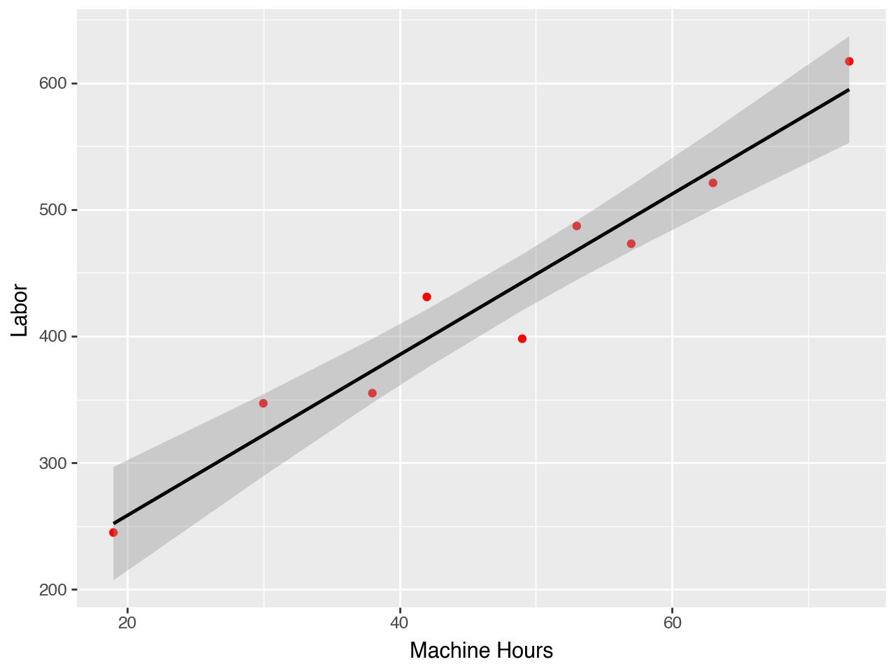
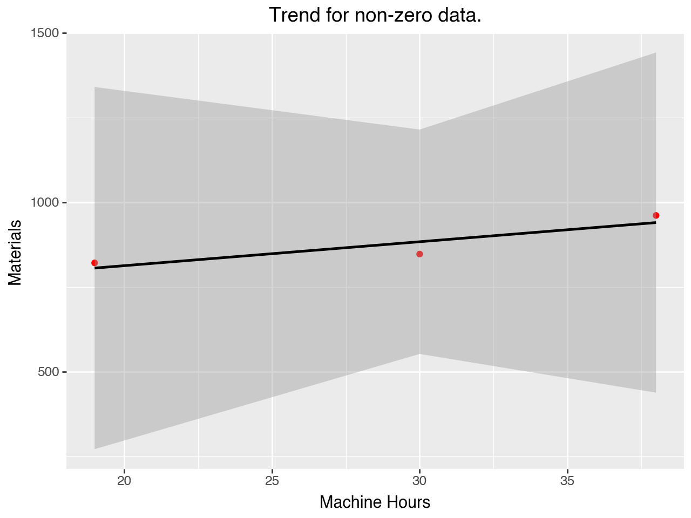

Obtain data: includes determining what data measures the things that you are interested in understanding. This can be from internal or external sources.
Scrub data: look at the data and figure out how to make it usefull. In the simple case of our assignments this is as straightforward a simply moving the data from Canvas into Excel or Python.
Explore data: includes informal plotting, viewing (like actually looking at the data), and etc. the goal at this point is to understand the arrangement and features of the data. This step can raise questions that we might want to answer quickly by discussing with others. This is things like “why are the data for Feb missing?” or “what units do we measure fuel consumption in?”
Model data: here we are trying to formalize patterns, estimating relationships between variables and thinking about the conditions under which these relationships hold and do not hold.
Interpret data: this is the reporting, communication, and decision making step! Here we decide which information to base our decisions on, or how we are going to present our recommendations.
First step: Plotting the data start with scatter plots and time-series plots. This will help you see if things are wrong, as well as helping you develop your intuition about which variables are related, and which variables are changing over time.
Do you see the patterns you expect? Do you see any unexpected patterns?
How much variation is there in the data? i.e. are there factors that are not on the graph that drive the relationship?
Second Step: Statistical Modeling fit a model to the data.
Third Step: Use the graph to understand the model
Are there problems that we missed before? Can we make meaningful inferences? Can we use this model as a planning tool?
This means plotting the data and the model.
Fourth Step: Improve the model and gather more data
Stage 2: Identify the underlying cost behavior for all budgetary expense line items.
Stage 3: Plot and analyze the data.
Stage 4: Estimate the cost function.
Stage 5: Test the cost function against the data.
Plot the data and the model.
Stage 6: Find the most simple functional model.
This might not be the only model you use, but this will be the one you present first.
Stage 0: Choose the dependent variable.
This is the cost object. You may need more than one, and you need at least one per cost center
Cost center: a part of the company where costs are tracked independently. From the perspective of the cost system a cost center is a “firm-within-the-firm”, or an operational unit (System 1 in the Viable Systems Model).
Cost Centers
Consider a merger between a packaging firm and transportation firm:
The easiest way to begin costing in the combined firm is to treat them as separate!
This is the basic idea behind a cost center.
As synergies arise, resources will be shared and we may begin to combine parts of the two companies. Or allocate costs in a more nuanced way.
Stage 0: Choose the dependent variable.
Six Reasons to Group Equipment or Operations in One Cost Center
Proximity
Immateriality
Same responsible manager
Similar cost structure
Similar function
These reasons become more salient as synergies within the firm increase.
This requires a detailed knowledge of the production process.
The experts on the details of the cost system are most often low-level employees.
Many of you are interested in consulting work, keep in mind that you will never be the expert in the details of the cost system! Don’t forget to talk to the people who actually touch the production process.
In fact, often when consultants offer long-term value it is by finding broken communication or information channels.
Drivers should be plausible and measurable.
Stage 2: Identify the underlying cost behavior for all budgetary expense line items.
In stage 1 we focused on what drives cost. Here we are gathering information about the direction, magnitude, and variability of these relationships.
The sources of this information are supply contracts, market prices, product designs, and past usage data.
If some are mixtures of fixed and variable costs, separate them where possible.
Think about whether costs are fixed locally or globally (i.e. are they fixed within some relevant range, or when production goes to zero).
Stage 3: Plot and analyze the data.
The first steps are management accounting. But here this is pure data science and statistics, but that doesn’t mean its overly complicated. This step lets us make sure that our costing system is functioning the way that we think it should.
This is as simple as dumping all the data you have into a spreadsheet, or data frame and starting to plot things. This is what we did in the assignment!
Stage 4: Estimate the cost function.
Evaluate economic plausibility and goodness of fit. A good practice is to add the models you fit to the plots of data (this gives you a visual version of things like \(R^2\)).
The purpose of a cost function is to allocate costs to cost objects.
Stage 4: Estimate the cost function.
This allows us to raise several questions:
Are difficult-to-manufacture products cheap to produce? (‘Yes’ may signal a problem.)
Are there sensible reasons for differences in margins across products? (No may signal a problem.)
Do competitors sell your high margin products? (No may signal a problem.)
Is the outcome of bidding predictable? (No may signal a problem.)
How do customers react to price increases? (Inability to predict reaction may signal a problem.)
Explore the impact on rates of differing allocation bases or cost behavior assumptions if these are in dispute. This often requires generating standard costs to explore the impact on product prices. This process leads to the next step.
Stage 5: Test cost functions at a variety of different levels of aggregation.
The parameters of the cost function will be used to generate budgets (they are called “standard costs”
Before settling on a final cost system test the standard costs that arise from merging cost centers (e.g., departments, plants, etc.). This often results in a much simplified design. When establishing or reviewing a cost system highest level of disaggregation may be used to test the accuracy of these aggregate designs.
Stage 6: Identify the smallest number of cost centers that produce adequate standard costs for the firm’s requirements.
Stages 4 & 5 developed various alternative approaches for the firm. Here we weigh the costs and benefits of the systems. Remember, complexity maybe fun to develop and explore, but not as fun to maintain and use!
Discussion of the problem set
Excel and Python examples are posted on Canvas and the course website.
Problem: Data Collection Issues I
Trevor Kennedy, the cost analyst at United Packaging’s can manufacturing plant, is seeking to develop a cost function(s) that relates engineering support (E.5.) costs to machine hours. These costs have two components: (1) labor (which is paid monthly) and (2) materials and parts (which are purchased from an outside vendor every three months). He collects the following monthly data from the accounting records kept at the factory:
Data:
Month
Labor
Materials
Machine Hours
March
$347
$847
30
April
521
0
63
May
398
0
49
June
355
961
38
July
473
0
57
August
617
0
73
September
245
821
19
October
487
0
53
November
431
0
42
1. Create three plots:
Dependent Variable
Cost Driver
(y-axis)
(x-axis)
(i)
Labor costs
Machine Hours
(ii)
Materials costs
Machine Hours
(iii)
Total costs
Machine Hours
You can think of these plots as plotting cost as a function of machine hours. So the data are telling us something about three cost functions.
Excel Example:
See Excel file on Canvas.
Python Example: Set up.
import pandas as pd# from plotnine import * # import * because YOLO!import plotnine as pn# load the data p2df=pd.read_csv("data2p.csv")# calculate total cost (note how we are selecting columns)p2df['Total Cost'] = p2df['Labor'] + p2df['Materials']p2df
Month
Labor
Materials
Machine Hours
Total Cost
0
March
347
847
30
1194
1
April
521
0
63
521
2
May
398
0
49
398
3
June
355
961
38
1316
4
July
473
0
57
473
5
August
617
0
73
617
6
September
245
821
19
1066
7
October
487
0
53
487
8
November
431
0
42
431
Python Example: Plot Labor
(pn.ggplot( p2df, # this is the dataset# aes allows us to specify the vars/axis pn.aes(x='Machine Hours', y='Labor')) + pn.geom_point(colour="red") # add the data + pn.stat_smooth(method='ols') # add a trendline)

Python Example: Plot Materials
(pn.ggplot( p2df, # dataset pn.aes(x='Machine Hours', y='Materials')) # axis + pn.geom_point(colour="red") # plot the data+ pn.stat_smooth(method='ols') # plot the trend)
3. What are two factors that could explain the pattern of monthly costs for materials? For each factor you cite explain its implications for examining cost-behavior patterns.
I actually want you to think carefully about this and come up with your own answer.
What does this plot tell you about the answer to 3?
(pn.ggplot(# p2df, # dataset p2df[p2df['Materials']!=0], pn.aes(x='Machine Hours', y='Materials')) # axis + pn.geom_point(colour="red") # plot the date+ pn.stat_smooth(method='ols') # plot the trend+ pn.ggtitle("Trend for non-zero data."))

What does this plot tell you about the answer to 3?
3. What are two factors that could explain the pattern of monthly costs for materials? For each factor you cite explain its implications for examining cost-behavior patterns.
First, and most importantly, the materials data has a problem! Whoever reported the data indicated ‘0’ when they should have reported nothing.
It is worth thinking about what resources we sacrifice when and how this relates to the cost system that we are building here. For example, we know that we sacrifice cash every three months in exchange for materials, but we don’t know what we do with those materials. Do we consume them immediately? If we consume them immediately then when do they generate revenue? Depending on how this plays out we would want to gather more information to develop more informative data.
One potential solution would be to use a different driver for materials. For example, number of cans used seems like an natural alternative.
Please keep in mind that this is an open ended question and I have only provided one potential answer.
In any case, the zeros SHOULD NOT be used to model the cost function.
Problem: Data Collection Issues II
Robin Green, financial analyst at Central Railroad, is examining the behavior of monthly transportation costs for budgeting purposes. Transportation costs at Central Railroad are the sum of two types of costs: (a) operating costs (labor, fuel, and so on), and (b) maintenance costs (overhaul of engines and track, and so on). Green collects monthly data on (a), (b), and track miles hauled for that month. Track miles hauled are the miles docked by the engine that pulls the rail carriages. Monthly observations for the most recent year are:
Data
Month
Operating Costs
Maintenance Costs
Miles
January
$471
$437
3,420
February
504
338
5,310
March
609
343
5,410
April
690
347
8,440
May
742
294
9,320
June
774
211
8,910
July
784
176
8,870
August
986
210
10,980
September
895
282
4,980
October
651
394
5,220
November
481
381
4,480
December
386
514
2,980
Central Railroad earns its greatest revenues carrying agricultural commodities such as wheat and barley.
Do the following:
Present plots of the monthly data underlying each of the following cost functions:
Operating costs = a + b (Track miles hauled)
Maintenance costs = a + b (Track miles hauled)
Total transportation costs = a + b (Track miles hauled)
Comment on the patterns in the three plots.
Compute estimates of the three cost functions in requirement 1, using linear regressions. Comment on the estimated cost functions, and add the cost functions to the plots you created in 1.
Miles seems to yield a reasonable model of operating costs. Most of the data is close to the line and the distribution seems stable over the observations that we have. The September observation is interesting, we should find out what caused this. Do we this this was a one-time event? Or is there potential that this is an underlying pattern?
Maintenance costs are decreasing as mile increase. This suggest that there is something missing from our model. Questions that you could consider:
What is happening to maintenance prices over this time (both within and across years)?
Is there a mechanical relationship between miles and maintenance? Do increased miles in one month cause maintenance in the next month? Does high maintenance reduce miles?
What are the actual maintenance schedules? What are they based on? Do those schedules suggest other cost drivers?
3. What assumptions does the regression method make?
The number of assumptions varies widely depending on how the discussion is structured.
Linearity - i.e. the model fits the data.
Errors are normal and independent from each other (sometimes called the independence and exogeneity conditions).
The magnitude of the errors is not correlated with the variables themselves.
A final note:
Variables must only be in the model once, this creates a problem when two measures are highly correlated, or two variables measure the same thing slightly differently.
Think about which problem are most likely to be active in our setting and how the workflows we discussed can help us address these issues.
4. Outline three limitations of the regression method.
In addition to the restrictive assumptions above, we may need lots of data to get good estimates.
Yields precise estimates, which may be wrong if misapplied.
5. What are other options?
Other statistical methods relax the assumptions above.
Comment on the estimated cost functions:
Miles seems to yield a reasonable model of operating costs. Most of the data is close to the line and the distribution seems stable over the observations that we have. The September observation is interesting, we should find out what caused this. Do we this this was a one-time event? Or is there potential that this is an underlying pattern?
Maintenance costs are decreasing as mile increase. This suggest that there is something missing from our model. Questions that you could consider: